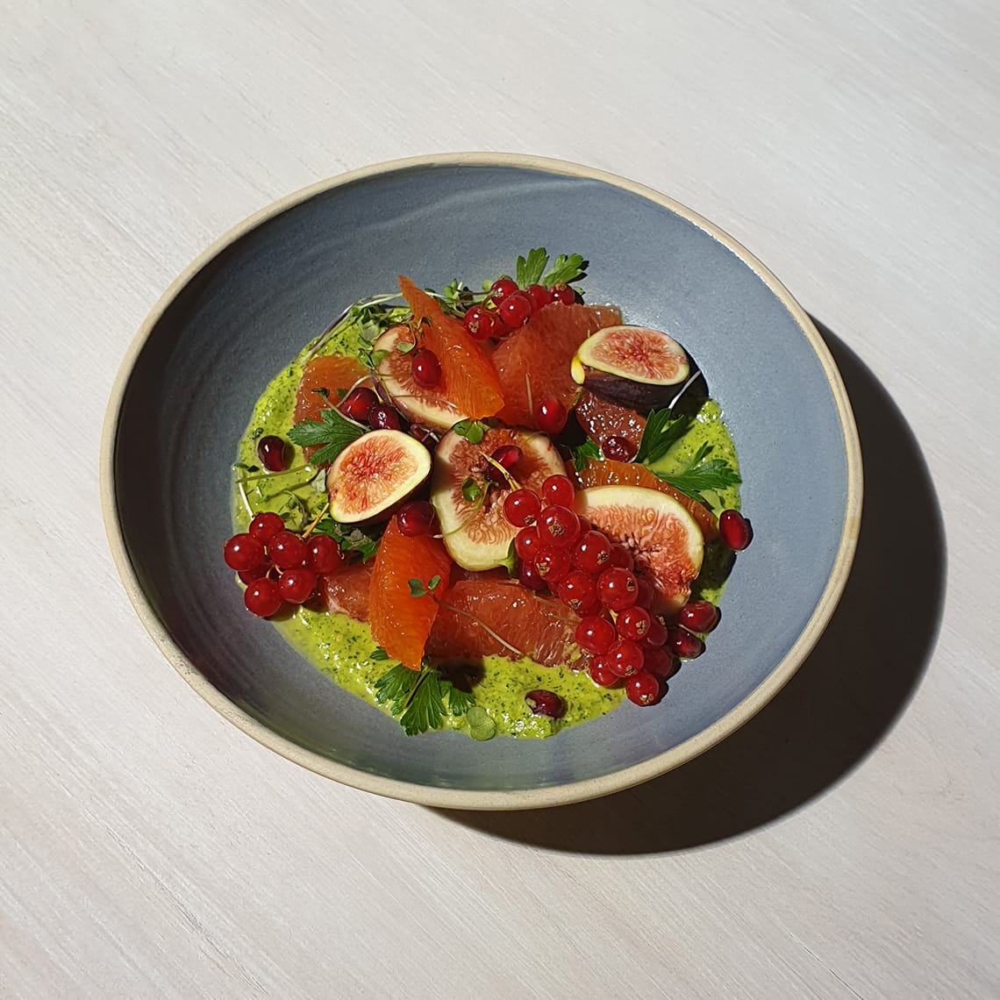

Take your photography to the next level with photo tips. This week, learn how to use Scene Optimizer Mode with your Galaxy Note9.
Shoot a better scene
Find a tree worth capturing. Put your Note9 on Auto Mode. Frame the tree in the center of your camera. Wait until the tree icon appears. Then take the shot.

Make every meal stand out
Prepare a unique meal. Present it on a complementary dish. Hold your Note9 above it while on Auto Mode. After the food icon appears, take the shot.
Get every petal to pop
Spot a unique flower? Capture it better. Get close so it’s at least 25% of the frame. Switch your Note9 to Auto Mode. Wait until the flower icon appears. Then take your shot.